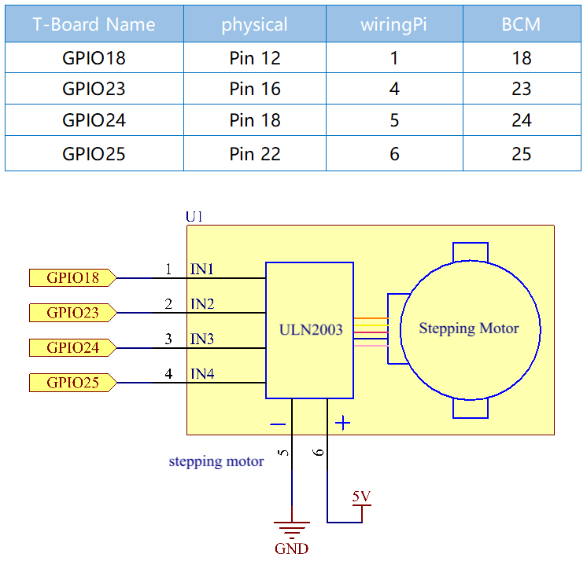

Nota
¡Hola! Bienvenido a la Comunidad de Entusiastas de SunFounder Raspberry Pi, Arduino y ESP32 en Facebook. Profundiza en Raspberry Pi, Arduino y ESP32 junto a otros entusiastas.
¿Por qué unirse?
Soporte Experto: Resuelve problemas post-venta y desafíos técnicos con la ayuda de nuestra comunidad y equipo.
Aprender y Compartir: Intercambia consejos y tutoriales para mejorar tus habilidades.
Avances Exclusivos: Accede anticipadamente a anuncios de nuevos productos y avances.
Descuentos Especiales: Disfruta de descuentos exclusivos en nuestros productos más nuevos.
Promociones Festivas y Sorteos: Participa en sorteos y promociones navideñas.
üëâ ¬øListo para explorar y crear con nosotros? Haz clic en [Aqu√≠] y únete hoy!
1.3.3 Motor Paso a Paso
Introducción
Los motores paso a paso, debido a su diseño único, pueden ser controlados con un alto grado de precisión sin necesidad de mecanismos de retroalimentación. El eje de un motor paso a paso, montado con una serie de imanes, es controlado por un conjunto de bobinas electromagnéticas que se cargan de manera positiva y negativa en una secuencia específica, moviéndolo hacia adelante o hacia atrás en pequeños «pasos».
Componentes

Principio
Motor Paso a Paso
Los motores paso a paso, debido a su diseño único, pueden controlarse con un alto grado de precisión sin ningún mecanismo de retroalimentación. El eje de un motor paso a paso, montado con una serie de imanes, es controlado por una serie de bobinas electromagnéticas que se cargan positiva y negativamente en una secuencia específica, moviéndolo hacia adelante o hacia atrás en pequeños «pasos».

En la figura, en el medio del motor hay un rotor, que es un imán permanente en forma de engranaje. Alrededor del rotor, del 0 al 5 hay dientes. Más afuera, hay 8 polos magnéticos, con cada dos opuestos conectados por un devanado de bobina. Así forman cuatro pares de A a D, lo que se llama una fase. Tiene cuatro cables de conexión que se conectan a los interruptores SA, SB, SC y SD. Por lo tanto, las cuatro fases están en paralelo en el circuito, y los dos polos magnéticos en una fase están en serie.
Así es como funciona un motor paso a paso de 4 fases:
Cuando el interruptor SB está encendido, los interruptores SA, SC y SD están apagados, y los polos magnéticos de la fase B se alinean con los dientes 0 y 3 del rotor. Al mismo tiempo, los dientes 1 y 4 generan dientes desfasados con los polos de la fase C y D. Los dientes 2 y 5 generan dientes desfasados con los polos de la fase D y A. Cuando el interruptor SC está encendido, los interruptores SB, SA y SD están apagados, el rotor gira bajo el campo magnético del devanado de la fase C y entre los dientes 1 y 4. Luego, los dientes 1 y 4 se alinean con los polos magnéticos del devanado de la fase C. Mientras tanto, los dientes 0 y 3 generan dientes desfasados con los polos de la fase A y B, y los dientes 2 y 5 generan dientes desfasados con los polos magnéticos de las fases A y D. La situación similar continúa. Energiza las fases A, B, C y D en secuencia, y el rotor girará en el orden de A, B, C y D.

El motor paso a paso de 4 fases tiene tres modos de operación: paso simple de cuatro pasos, doble paso de cuatro pasos y paso de ocho pasos. El ángulo de paso para el paso simple de cuatro pasos y el doble paso de cuatro pasos son los mismos, pero el par motor para el paso simple de cuatro pasos es menor. El ángulo de paso del modo de ocho pasos es la mitad del del modo de paso simple y doble de cuatro pasos. Por lo tanto, el modo de operación de ocho pasos puede mantener un alto par motor y mejorar la precisión del control.
El estator del motor paso a paso que utilizamos tiene 32 polos magnéticos, por lo que se necesitan 32 pasos para completar un giro. El eje de salida del motor paso a paso está conectado a un conjunto de engranajes reductores, y la relación de reducción es de 1/64. Así, el eje de salida final rota un círculo que requiere 32*64=2048 pasos.
ULN2003
Para aplicar el motor en el circuito, es necesario usar una placa de control. El controlador de motor paso a paso ULN2003 es un circuito inversor de 7 canales. Es decir, cuando el pin de entrada está en alto, el pin de salida del ULN2003 está en bajo, y viceversa. Si suministramos un nivel alto a IN1 y un nivel bajo a IN2, IN3 e IN4, entonces el extremo de salida OUT1 estará en bajo y todos los demás extremos de salida estarán en alto. La estructura interna del chip se muestra a continuación.

El controlador del motor paso a paso constituido por el chip ULN2003 y 4 LEDs se muestra a continuación. En la placa, IN1, IN2, IN3 e IN4 funcionan como entradas y los cuatro LEDs, A, B, C, D son indicadores del pin de entrada. Además, OUT1, OUT2, OUT3 y OUT4 están conectados a SA, SB, SC y SD en el controlador del motor paso a paso. Cuando el valor de IN1 se establece en un nivel alto, A se enciende; el interruptor SA está encendido, y el motor paso a paso gira un paso. El caso similar se repite continuamente. Por lo tanto, al proporcionar al motor paso a paso una secuencia de tiempo específica, girará paso a paso. El ULN2003 aquí se utiliza para proporcionar secuencias de tiempo particulares para el motor paso a paso.

Diagrama Esquemático
Procedimientos Experimentales
Paso 1: Construir el circuito.

Paso 2: Acceder a la carpeta del código.
cd ~/davinci-kit-for-raspberry-pi/c/1.3.3/
Paso 3: Compilar el código.
gcc 1.3.3_StepperMotor.c -lwiringPi
Paso 4: Ejecutar el archivo ejecutable.
sudo ./a.out
Al ejecutar el código, el motor paso a paso girará en sentido horario o antihorario según tu entrada “a” o “c”.
Nota
Si no funciona después de ejecutarlo, o aparece un mensaje de error: "wiringPi.h: No such file or directory", consulta c code is not working?.
Código
#include <stdio.h>
#include <wiringPi.h>
const int motorPin[] = {1, 4, 5, 6};
int rolePerMinute = 15;
int stepsPerRevolution = 2048;
int stepSpeed = 0;
void rotary(char direction){
if(direction == 'c'){
for(int j=0;j<4;j++){
for(int i=0;i<4;i++)
{digitalWrite(motorPin[i],0x99>>j & (0x08>>i));}
delayMicroseconds(stepSpeed);
}
}
else if(direction =='a'){
for(int j=0;j<4;j++){
for(int i=0;i<4;i++)
{digitalWrite(motorPin[i],0x99<<j & (0x80>>i));}
delayMicroseconds(stepSpeed);
}
}
}
void loop()
{
char direction = '0';
while (1)
{
printf("select motor direction a=anticlockwise, c=clockwise: ");
delay(100);
direction=getchar();
if (direction == 'c')
{
printf("motor girando en sentido horario\n");
delay(100);
break;
}
else if (direction == 'a')
{
printf("motor running anti-clockwise\n");
delay(100);
break;
}
else
{
printf("input error, please try again!\n");
delay(100);
}
}
while(1)
{
rotary(direction);
}
}
void main(void)
{
if (wiringPiSetup() == -1)
{
printf("setup wiringPi failed !");
return;
}
for (int i = 0; i < 4; i++)
{
pinMode(motorPin[i], OUTPUT);
}
stepSpeed = (60000000 / rolePerMinute) / stepsPerRevolution;
loop();
}
Explicación del Código
int rolePerMinute = 15;
int stepsPerRevolution = 2048;
int stepSpeed = 0;
revolucionesPorMinuto: revoluciones por minuto, el RPM del motor paso a paso utilizado en este kit debe estar entre 0 y 17.
pasosPorRevolucion: el número de pasos para cada giro, y el motor paso a paso utilizado en este kit necesita 2048 pasos por revolución.
velocidadPaso: el tiempo utilizado para cada paso, y en main(), asignamos los valores a ellos:「(60000000 / revolucionesPorMinuto) / pasosPorRevolucion」(60,000,000 us=1 minuto)
void loop()
{
char direction = '0';
while (1)
{
printf("select motor direction a=anticlockwise, c=clockwise: ");
direction=getchar();
if (direction == 'c')
{
printf("motor running clockwise\n");
break;
}
else if (direction == 'a')
{
printf("motor running anti-clockwise\n");
break;
}
else
{
printf("input error, please try again!\n");
}
}
while(1)
{
rotary(direction);
}
}
La función loop() se divide en dos partes principales (ubicadas entre dos while(1)):
La primera parte es para obtener el valor de la tecla. Cuando se obtiene “a” o “c”, se sale del bucle y se detiene la entrada.
La segunda parte llama a rotary(direccion) para hacer funcionar el motor paso a paso.
void rotary(char direction){
if(direction == 'c'){
for(int j=0;j<4;j++){
for(int i=0;i<4;i++)
{digitalWrite(motorPin[i],0x99>>j & (0x08>>i));}
delayMicroseconds(stepSpeed);
}
}
else if(direction =='a'){
for(int j=0;j<4;j++){
for(int i=0;i<4;i++)
{digitalWrite(motorPin[i],0x99<<j & (0x80>>i));}
delayMicroseconds(stepSpeed);
}
}
}
Para hacer que el motor paso a paso gire en sentido horario, el estado de nivel de motorPin se muestra en la tabla a continuación:

Por lo tanto, la escritura potencial de MotorPin se implementa utilizando un bucle anidado de dos capas.
En el Paso 1, j=0, i=0~4.
motorPin[0] se escribirá en alto (10011001&00001000=1)
motorPin[1] se escribirá en bajo (10011001&00000100=0)
motorPin[2] se escribirá en bajo (10011001&00000010=0)
motorPin[3] se escribirá en alto (10011001&00000001=1)
En el Paso 2, j=1, i=0~4.
motorPin[0] se escribirá en alto (01001100&00001000=1)
motorPin[1] se escribirá en bajo (01001100&00000100=1)
y así sucesivamente.
Y para hacer que el motor paso a paso gire en sentido antihorario, el estado de nivel de motorPin se muestra en la siguiente tabla.

En el Paso 1, j=0, i=0~4.
motorPin[0] se escribirá en alto (10011001&10000000=1)
motorPin[1] se escribirá en bajo (10011001&01000000=0)
En el Paso 2, j=1, i=0~4.
motorPin[0] se escribirá en alto (00110010&10000000=0)
motorPin[1] se escribirá en bajo (00110010&01000000=0)
y así sucesivamente.